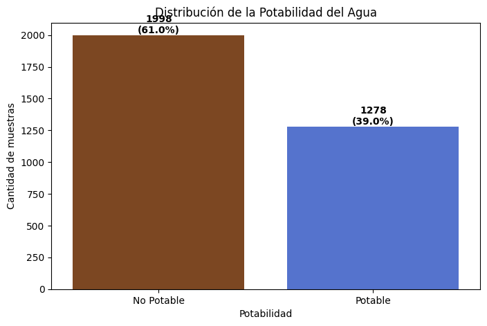
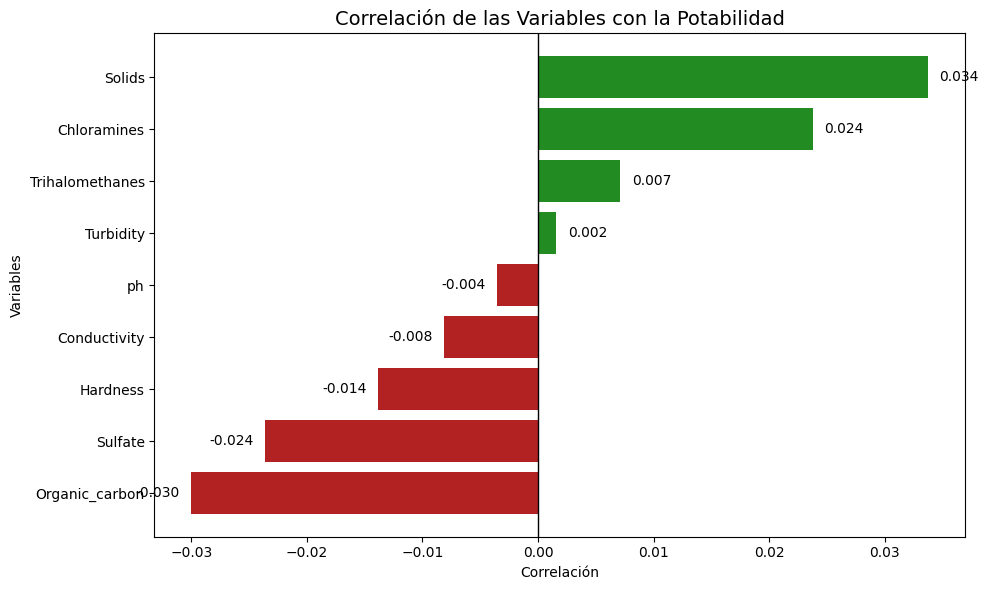
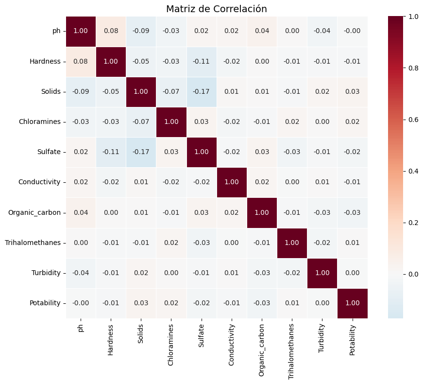

6. Analisis Exploratorio de Datos#
6.1 Importación de librerias
import pandas as pd
import numpy as np
import matplotlib.pyplot as plt
import seaborn as sns
Interpretación
Las librerías importadas permiten realizar procesos de manipulación, análisis y visualización de datos. Pandas y NumPy se utilizan para el manejo de estructuras de datos, mientras que Matplotlib y Seaborn facilitan la construcción de gráficos para el análisis exploratorio.
6.2 Cargue Inicial de los Datos
df = pd.read_csv("water_potability_clean.csv")
df.head(5)
| ph | Hardness | Solids | Chloramines | Sulfate | Conductivity | Organic_carbon | Trihalomethanes | Turbidity | Potability | |
|---|---|---|---|---|---|---|---|---|---|---|
| 0 | NaN | 204.890455 | 20791.318981 | 7.300212 | 368.516441 | 564.308654 | 10.379783 | 86.990970 | 2.963135 | 0 |
| 1 | 3.716080 | 129.422921 | 18630.057858 | 6.635246 | NaN | 592.885359 | 15.180013 | 56.329076 | 4.500656 | 0 |
| 2 | 8.099124 | 224.236259 | 19909.541732 | 9.275884 | NaN | 418.606213 | 16.868637 | 66.420093 | 3.055934 | 0 |
| 3 | 8.316766 | 214.373394 | 22018.417441 | 8.059332 | 356.886136 | 363.266516 | 18.436524 | 100.341674 | 4.628771 | 0 |
| 4 | 9.092223 | 181.101509 | 17978.986339 | 6.546600 | 310.135738 | 398.410813 | 11.558279 | 31.997993 | 4.075075 | 0 |
Interpretación
Se carga el conjunto de datos de potabilidad del agua en un DataFrame de Pandas. Posteriormente, se visualizan las primeras filas con el fin de verificar que la información haya sido importada correctamente y conocer la estructura inicial de los datos.
6.3 Información General del Dataset
df.info()
<class 'pandas.core.frame.DataFrame'>
RangeIndex: 3276 entries, 0 to 3275
Data columns (total 10 columns):
# Column Non-Null Count Dtype
--- ------ -------------- -----
0 ph 2785 non-null float64
1 Hardness 3276 non-null float64
2 Solids 3276 non-null float64
3 Chloramines 3276 non-null float64
4 Sulfate 2495 non-null float64
5 Conductivity 3276 non-null float64
6 Organic_carbon 3276 non-null float64
7 Trihalomethanes 3114 non-null float64
8 Turbidity 3276 non-null float64
9 Potability 3276 non-null int64
dtypes: float64(9), int64(1)
memory usage: 256.1 KB
Interpretación
Permite identificar:
1 Número de registros.
2 Tipo de dato de cada variable.
3 Cantidad de valores no nulos.
4 Presencia inicial de datos faltantes.
6.4 Estadísticas descriptivas
df.describe()
| ph | Hardness | Solids | Chloramines | Sulfate | Conductivity | Organic_carbon | Trihalomethanes | Turbidity | Potability | |
|---|---|---|---|---|---|---|---|---|---|---|
| count | 2785.000000 | 3276.000000 | 3276.000000 | 3276.000000 | 2495.000000 | 3276.000000 | 3276.000000 | 3114.000000 | 3276.000000 | 3276.000000 |
| mean | 7.080795 | 196.369496 | 22014.092526 | 7.122277 | 333.775777 | 426.205111 | 14.284970 | 66.396293 | 3.966786 | 0.390110 |
| std | 1.594320 | 32.879761 | 8768.570828 | 1.583085 | 41.416840 | 80.824064 | 3.308162 | 16.175008 | 0.780382 | 0.487849 |
| min | 0.000000 | 47.432000 | 320.942611 | 0.352000 | 129.000000 | 181.483754 | 2.200000 | 0.738000 | 1.450000 | 0.000000 |
| 25% | 6.093092 | 176.850538 | 15666.690297 | 6.127421 | 307.699498 | 365.734414 | 12.065801 | 55.844536 | 3.439711 | 0.000000 |
| 50% | 7.036752 | 196.967627 | 20927.833607 | 7.130299 | 333.073546 | 421.884968 | 14.218338 | 66.622485 | 3.955028 | 0.000000 |
| 75% | 8.062066 | 216.667456 | 27332.762127 | 8.114887 | 359.950170 | 481.792304 | 16.557652 | 77.337473 | 4.500320 | 1.000000 |
| max | 14.000000 | 323.124000 | 61227.196008 | 13.127000 | 481.030642 | 753.342620 | 28.300000 | 124.000000 | 6.739000 | 1.000000 |
Interpretación
Las estadísticas descriptivas permiten conocer el comportamiento general de las variables numéricas. Se observa que las características presentan diferentes rangos y niveles de dispersión, evidenciando variabilidad en las mediciones de calidad del agua.
6.5 Analizar y Visualizar la Variable Objetivo
df['Potability'].value_counts()
Potability
0 1998
1 1278
Name: count, dtype: int64
import matplotlib.pyplot as plt
import seaborn as sns
# Conteos
conteos = df['Potability'].value_counts().sort_index()
total = len(df)
# Gráfico
plt.figure(figsize=(8,5))
ax = sns.countplot(
data=df,
x='Potability',
palette=['saddlebrown', 'royalblue']
)
# Cambiar etiquetas
ax.set_xticklabels(['No Potable', 'Potable'])
# Agregar cantidad y porcentaje sobre cada barra
for p in ax.patches:
cantidad = int(p.get_height())
porcentaje = 100 * cantidad / total
ax.annotate(
f'{cantidad}\n({porcentaje:.1f}%)',
(p.get_x() + p.get_width()/2., cantidad),
ha='center',
va='bottom',
fontsize=10,
fontweight='bold'
)
plt.title('Distribución de la Potabilidad del Agua')
plt.xlabel('Potabilidad')
plt.ylabel('Cantidad de muestras')
plt.show()
C:\Users\mmay\AppData\Local\Temp\ipykernel_26092\361392415.py:10: FutureWarning:
Passing `palette` without assigning `hue` is deprecated and will be removed in v0.14.0. Assign the `x` variable to `hue` and set `legend=False` for the same effect.
ax = sns.countplot(
C:\Users\mmay\AppData\Local\Temp\ipykernel_26092\361392415.py:17: UserWarning: set_ticklabels() should only be used with a fixed number of ticks, i.e. after set_ticks() or using a FixedLocator.
ax.set_xticklabels(['No Potable', 'Potable'])

Interpretación
La variable Potability presenta dos categorías: agua no potable y agua potable. Se observa que la categoría No potable concentra la mayor cantidad de registros, con aproximadamente el 61% de las muestras, mientras que la categoría Potable representa cerca del 39%. Esto evidencia un desbalance moderado entre las clases, aspecto que deberá considerarse en las etapas posteriores de modelado.
6.6. Identificación y Visualización de las variables que se relacionan más con la potabilidad
corr_potability = df.corr(numeric_only=True)['Potability'].sort_values(ascending=False)
corr_potability
Potability 1.000000
Solids 0.033743
Chloramines 0.023779
Trihalomethanes 0.007130
Turbidity 0.001581
ph -0.003556
Conductivity -0.008128
Hardness -0.013837
Sulfate -0.023577
Organic_carbon -0.030001
Name: Potability, dtype: float64
import matplotlib.pyplot as plt
import numpy as np
corr_plot = (
corr_potability
.drop('Potability')
.sort_values()
)
# Colores según el signo de la correlación
colors = ['firebrick' if x < 0 else 'forestgreen' for x in corr_plot]
plt.figure(figsize=(10,6))
bars = plt.barh(
corr_plot.index,
corr_plot.values,
color=colors
)
# Etiquetas de los valores
for bar in bars:
width = bar.get_width()
plt.text(
width + 0.001 if width >= 0 else width - 0.001,
bar.get_y() + bar.get_height()/2,
f'{width:.3f}',
va='center',
ha='left' if width >= 0 else 'right'
)
plt.axvline(x=0, color='black', linewidth=1)
plt.title('Correlación de las Variables con la Potabilidad', fontsize=14)
plt.xlabel('Correlación')
plt.ylabel('Variables')
plt.tight_layout()
plt.show()

Interpretación
Ninguna de las variables presenta una correlación lineal fuerte con la potabilidad del agua. Las correlaciones obtenidas son muy bajas y cercanas a cero, lo que indica que la potabilidad no depende de una única característica fisicoquímica. La variable con mayor correlación positiva es Solids (0.0337), mientras que Organic_carbon (-0.0300) presenta la mayor correlación negativa; sin embargo, ambas relaciones son débiles.
6.7 Matriz de correlación
Ahora vamos a analizar la relación entre todas las variables.
import matplotlib.pyplot as plt
import seaborn as sns
# Matriz de correlación
corr_matrix = df.corr(numeric_only=True)
plt.figure(figsize=(10, 8))
sns.heatmap(
corr_matrix,
annot=True,
fmt='.2f',
cmap='RdBu_r',
center=0,
linewidths=0.5,
square=True
)
plt.title('Matriz de Correlación', fontsize=14)
plt.tight_layout()
plt.show()
